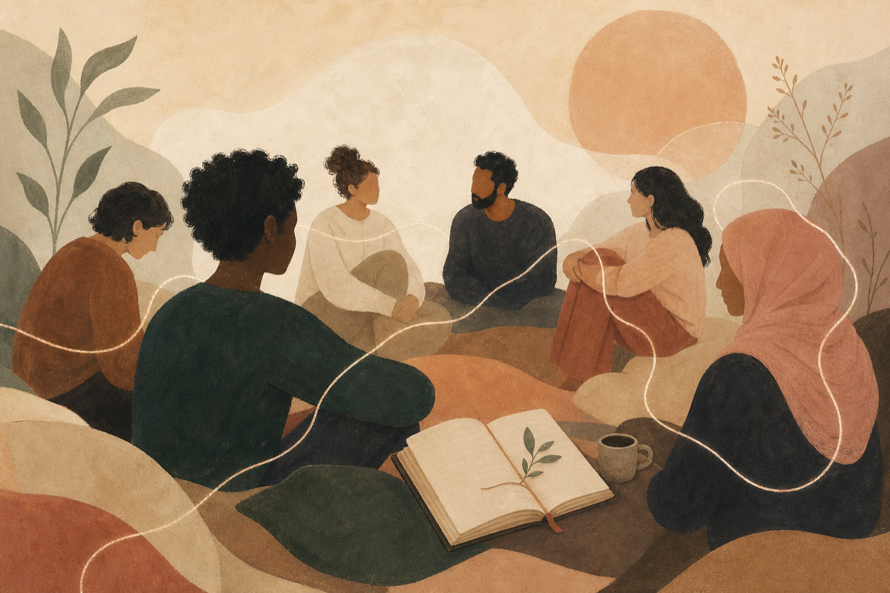
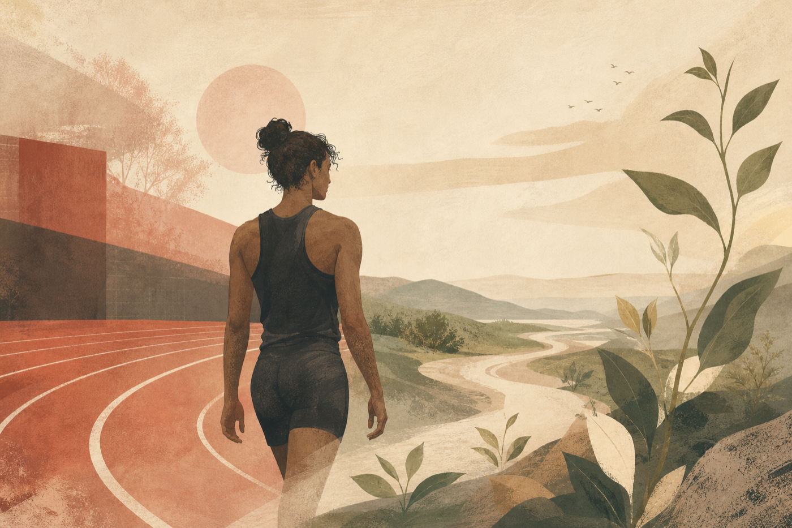

Stories
A place to find perspective, connection, and hope.
Every story on Broad Shoulders is a reminder that no one is alone. Through personal experiences and reflections inspired by athletes, we can learn, reflect, and recognize that mental health is something we all navigate together.
Choose a Collection
Stories for different parts of the journey.

Personal & Community Reflections Community Voices Founder reflections, anonymous submissions, community stories, and personal experiences shared to remind others they are never alone. Explore Community Stories
Athletics & Identity Stories Beyond the Game Stories and reflections inspired by athletes who have spoken openly about mental health, pressure, identity, setbacks, resilience, and life beyond competition. Explore Stories Beyond the Game